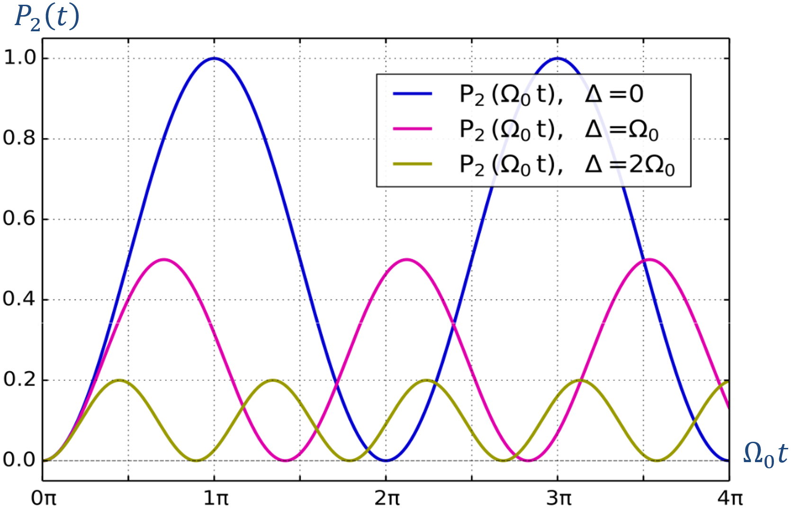
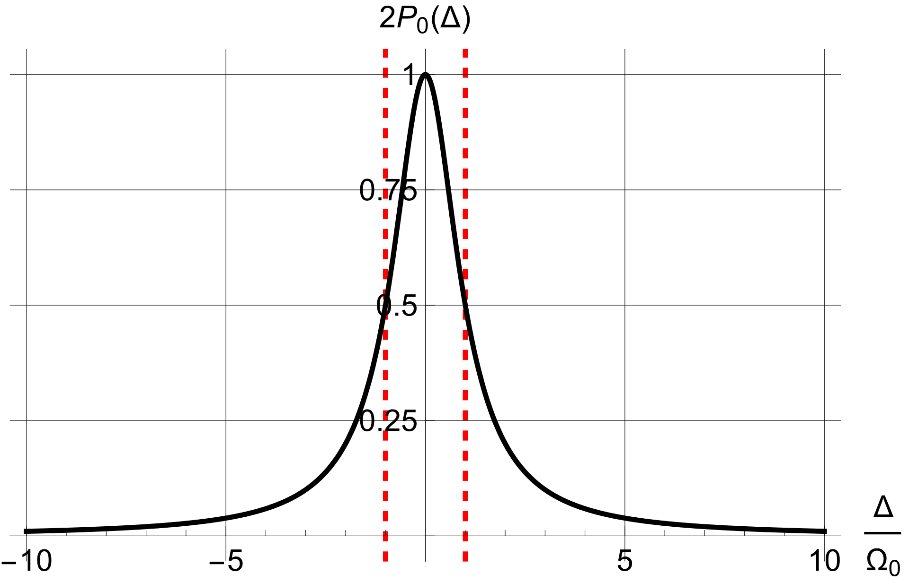
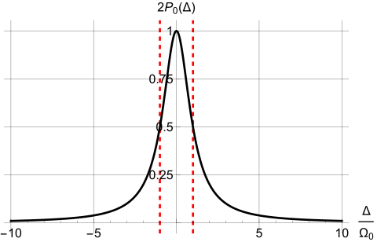

6 * Transitions
A state that is not an energy eigenstate evolves and can exhibit oscillations. Here we begin in an eigenstate of a dominant Hamiltonian and apply a small periodic perturbation that does not commute with it. This can drive oscillations between its eigenstates. Electron spin in a magnetic field remains our example.
6.1 Magnetic resonance
An electron in static field \({{\bf{B}}_0} = {B_0}{\bf{\hat z}}\) initially has spin state \(\vert U\rangle\). States \(\vert U\rangle\) and \(\vert D\rangle\) have energies \({\mu _{\rm{B}}}B\) and \(- {\mu _{\rm{B}}}{B_0}\). Both are stationary, so the system remains in either state without a perturbation. Apply a transverse oscillating field \({\bf{B'}}\) at frequency \(\omega\), perpendicular to \({{\bf{B}}_0}\), with \(\left\vert {{\bf{B'}}} \right\vert \ll \left\vert {{{\bf{B}}_0}} \right\vert\). Although weak, the periodic perturbation can profoundly affect the evolution under suitable conditions.
Write the transverse field as
\[ {\bf{B'}} = {B'_x}{\bf{\hat x}} + {B'_y}{\bf{\hat y}} \tag{6.1}\]
Let \({\bf{B'}}\) be a constant-magnitude circularly polarized field rotating in the same sense as the electron’s precession in \({{\bf{B}}_0}\):
\[ {B'_x} = B'\cos \omega t; \qquad \qquad {B'_y} = B'\sin \omega t \tag{6.2}\]
The interaction Hamiltonian for the total field is
\[ \hat H = - {{\bf{\mu }}_{\rm{S}}} \cdot \left( {{{\bf{B}}_0} + {\bf{B'}}} \right) = {\hat H_0} + \hat V(t) \tag{6.3}\]
Here \({\hat H_0}\) and \(\hat V\) are the static-field and oscillating-field energy operators. In the \({\hat \sigma _z}\) representation,
\[ {\hat H_0} = - {{\bf{\mu }}_{\rm{S}}} \cdot {{\bf{B}}_0} = {\mu _{\rm{B}}}{\hat \sigma _z}{B_0} \buildrel\textstyle.\over= {\mu _{\rm{B}}}\left( {\begin{array}{*{20}{c}} {{B_0}}&0\\ 0&{ - {B_0}} \end{array}} \right) = \frac{\hbar }{2}\left( {\begin{array}{*{20}{c}} {{\omega _0}}&0\\ 0&{ - {\omega _0}} \end{array}} \right) \tag{6.4}\]
Here \({\omega _0} \equiv {{({E_1} - {E_2})} \mathord{\left/ {\vphantom {{({E_1} - {E_2})} \hbar }} \right. \kern-1.2pt } \hbar } = {{2{\mu _{\rm{B}}}{B_0}} \mathord{\left/ {\vphantom {{2{\mu _{\rm{B}}}{B_0}} \hbar }} \right. \kern-1.2pt } \hbar }\) is the static-field Larmor frequency.
\[ \begin{array}{c} \hat V(t) = - {{\bf{\mu }}_{\rm{S}}} \cdot {\bf{B'}} = {\mu _{\rm{B}}}\left( {{{\hat \sigma }_x}{{B'}_x} + {{\hat \sigma }_y}{{B'}_y}} \right) \buildrel\textstyle.\over= {\mu _{\rm{B}}}\left( {\begin{array}{*{20}{c}} 0&{{{B'}_x} - i{{B'}_y}}\\ {{{B'}_x} + i{{B'}_y}}&0 \end{array}} \right)\\ = {\mu _{\rm{B}}}\left( {\begin{array}{*{20}{c}} 0&{B'{e^{ - i\omega t}}}\\ {B'{e^{i\omega t}}}&0 \end{array}} \right) = \frac{\hbar }{2}\left( {\begin{array}{*{20}{c}} 0&{{\Omega _0}{e^{ - i\omega t}}}\\ {{\Omega _0}{e^{i\omega t}}}&0 \end{array}} \right) \end{array} \tag{6.5}\]
The quantity \({\Omega _0} \equiv {{2{\mu _{\rm{B}}}B'} \mathord{\left/ {\vphantom {{2{\mu _{\rm{B}}}B'} \hbar }} \right. \kern-1.2pt } \hbar }\) is the Rabi frequency, or resonant Rabi frequency. Rabi received the 1944 Nobel Prize in Physics for the atomic and molecular beam magnetic-resonance method.
The total Hamiltonian is therefore
\[ \hat H \buildrel\textstyle.\over= \frac{\hbar }{2}\left( {\begin{array}{*{20}{c}} {{\omega _0}}&{{\Omega _0}{e^{ - i\omega t}}}\\ {{\Omega _0}{e^{i\omega t}}}&{ - {\omega _0}} \end{array}} \right) \tag{6.6}\]
Expand spin state \(\vert {\psi (t)}\rangle\) at time \(t\) in the \({\hat \sigma _z}\) representation, incorporating the initial condition:
\[ \vert {\psi (t)}\rangle = {c_1}(t)\vert U\rangle + {c_2}(t)\left\vert D \right\rangle \buildrel\textstyle.\over= \left( {\begin{array}{*{20}{c}} {{c_1}(t)}\\ {{c_2}(t)} \end{array}} \right), \qquad {\left\vert {{c_1}} \right\vert ^2} + {\left\vert {{c_2}} \right\vert ^2} = 1,\;\;\left( {\begin{array}{*{20}{c}} {{c_1}(0) = 1}\\ {{c_2}(0) = 0} \end{array}} \right),\;\; \tag{6.7}\]
Substituting Equation 6.6 and Equation 6.7 into the Schrödinger equation gives
\[ \left( {\begin{array}{*{20}{c}} {{{\dot c}_1}}\\ {{{\dot c}_2}} \end{array}} \right) = - \frac{i}{2}\left( {\begin{array}{*{20}{c}} {{\omega _0}}&{{\Omega _0}{e^{ - i\omega t}}}\\ {{\Omega _0}{e^{i\omega t}}}&{ - {\omega _0}} \end{array}} \right)\left( {\begin{array}{*{20}{c}} {{c_1}}\\ {{c_2}} \end{array}} \right) \tag{6.8}\]
Introduce a rotating-frame transformation:1
\[ {c_1}(t) = {d_1}(t){e^{ - {{i\omega t} \mathord{\left/ {\vphantom {{i\omega t} 2}} \right. \kern-1.2pt } 2}}}; \qquad {c_2}(t) = {d_2}(t){e^{{{i\omega t} \mathord{\left/ {\vphantom {{i\omega t} 2}} \right. \kern-1.2pt } 2}}}. \tag{6.9}\]
Equation Equation 6.8 becomes a system without the rapid oscillating factors:
\[ \left( {\begin{array}{*{20}{c}} {{{\dot d}_1}}\\ {{{\dot d}_2}} \end{array}} \right) = \frac{i}{2}\left( {\begin{array}{*{20}{c}} \Delta &{ - {\Omega _0}}\\ { - {\Omega _0}}&{ - \Delta } \end{array}} \right)\left( {\begin{array}{*{20}{c}} {{d_1}}\\ {{d_2}} \end{array}} \right), \qquad \left( {\begin{array}{*{20}{c}} {{d_1}(0)}\\ {{d_2}(0)} \end{array}} \right) = \left( {\begin{array}{*{20}{c}} 1\\ 0 \end{array}} \right) \tag{6.10}\]
Here \(\Delta \equiv \omega - {\omega _0}\) is the detuning. The solution of Equation 6.10 is given below; the derivation appears in this chapter’s appendix.
\[ \begin{array}{l} {d_1}(t) = \cos \frac{{\Omega t}}{2} + i\frac{\Delta }{\Omega }\sin \frac{{\Omega t}}{2}\\ {d_2}(t) = - i\frac{{{\Omega _0}}}{\Omega }\sin \frac{{\Omega t}}{2} \end{array} \tag{6.11}\]
The quantity \(\Omega \equiv \sqrt {{\Delta ^2} + \Omega _0^2}\) is the generalized Rabi frequency. Substituting Equation 6.11 into Equation 6.9 and then Equation 6.7 gives \(\vert {\psi (t)}\rangle\) at any time. The probabilities of states \(\vert U\rangle\) and \(\vert D\rangle\) are
\[ \begin{gathered} {P_1}(t) \equiv {\left\vert {{c_1}(t)} \right\vert ^2} = \frac{1}{2}\left( {1 + \frac{{{\Delta ^2}}}{{{\Omega ^2}}}} \right) + \frac{1}{2}\frac{{\Omega _0^2}}{{{\Omega ^2}}}\cos \Omega t\xrightarrow{{\Delta = 0}}\frac{1}{2}\left( {1 + \cos {\Omega _0}t} \right) \\ {P_2}(t) \equiv {\left\vert {{c_2}(t)} \right\vert ^2} = \frac{1}{2}\frac{{\Omega _0^2}}{{{\Omega ^2}}}\left( {1 - \cos \Omega t} \right)\xrightarrow{{\Delta = 0}}\frac{1}{2}\left( {1 - \cos {\Omega _0}t} \right) \\ \Delta \equiv \omega - {\omega _0},\, \qquad {\Omega _0} \equiv {{2{\mu _{\text{B}}}B'} \mathord{\left/ {\vphantom {{2{\mu _{\text{B}}}B'} \hbar }} \right. \kern-1.2pt } \hbar }, \qquad \;\;\;\;\;\;\Omega \equiv \sqrt {{\Delta ^2} + \Omega _0^2} , \\ \end{gathered} \tag{6.12}\]
Both \({P}_{1}\) and \({P}_{2}\) oscillate at \(\Omega\), describing population transfer between the two levels.
Figure 6.1 plots \({P_2}\) for several detunings. At \(\Delta = 0\), \({P_2}\) oscillates most slowly but with maximum contrast, ranging from zero to one. The condition \(\Delta = 0\) is resonance. Increasing detuning increases the oscillation frequency of \({P_2}\) but reduces its amplitude and the transition probability. By Equation 6.12, whenever \(\Omega t\) is an even multiple of \(\pi\), \({P}_{2}=0\) and \({P}_{1}=1\), so the initial population returns. Whenever \(\Omega t\) is an odd multiple of \(\pi\), \({P}_{2}\) reaches its maximum for that detuning. At resonance, \({P}_{2}=1\), corresponding to complete transfer to the other level.
The drive \({\bf{B'}}\) makes \({P}_{2}\) oscillate at \(\Omega\). As \({P}_{2}\) increases, the electron’s mean magnetic energy decreases, transferring energy to the drive: stimulated emission. As \({P}_{2}\) decreases, its mean energy increases by absorbing energy from the drive: stimulated absorption. Both arise from the same mechanism, explaining the equality of Einstein’s corresponding coefficients for this two-state case.

Figure 6.1. Probability of electron spin state \(\vert D\rangle\) versus time at different detunings.
By Equation 6.12, the oscillatory amplitudes of \({P}_{2}\) and \({P}_{1}\) are both
\[ {P_0}(\Delta ) = \frac{1}{2}\frac{{\Omega _0^2}}{{{\Omega ^2}}} = \frac{1}{2}\frac{{\Omega _0^2}}{{{\Delta ^2} + \Omega _0^2}} \tag{6.13}\]
At fixed \({\Omega _0}\), \({P_0}(\Delta )\) is a peaked function of detuning \(\Delta\), as in Figure 6.2. Its half-width at half-maximum (HWHM) is \({\Omega _0}\). Since \({\Omega _0}\) is proportional to drive amplitude, stronger excitation broadens the line. This power broadening occurs in magnetic-resonance and spectroscopic measurements of level separations, such as absorption spectra.


Figure 6.2. \({P_0}(\Delta )\) peaks at \(\Delta = 0\) and has HWHM \({\Omega _0}\). Zero detuning is resonance.
We can also calculate the evolution of the mean spin vector \(\langle {\psi (t)}\vert {{{\hat S}_{x,y,z}}}\vert {\psi (t)}\rangle\).
\[ \begin{gathered} \langle {{{\hat S}_z}}(t)\rangle = \frac{\hbar }{2}\left( {\begin{array}{*{20}{c}} {c_1^*,}&{c_2^*} \end{array}} \right)\left( {\begin{array}{*{20}{c}} 1&0 \\ 0&{ - 1} \end{array}} \right)\left( {\begin{array}{*{20}{c}} {{c_1}} \\ {{c_2}} \end{array}} \right) = \frac{\hbar }{2}\left( {{{\left\vert {{c_1}} \right\vert }^2} - {{\left\vert {{c_2}} \right\vert }^2}} \right) \\ = \frac{\hbar }{2}\left[ {\left( {1 - \frac{{\Omega _0^2}}{{{\Omega ^2}}}} \right) + \frac{{\Omega _0^2}}{{{\Omega ^2}}}\cos \Omega t} \right]\xrightarrow{{\Delta = 0}}\frac{\hbar }{2}\cos {\Omega _0}t \\ \end{gathered} \tag{6.14}\]
\[ \begin{gathered} \langle {{{\hat S}_x}(t)}\rangle = \frac{\hbar }{2}\left( {\begin{array}{*{20}{c}} {c_1^*,}&{c_2^*} \end{array}} \right)\left( {\begin{array}{*{20}{c}} 0&1 \\ 1&0 \end{array}} \right)\left( {\begin{array}{*{20}{c}} {{c_1}} \\ {{c_2}} \end{array}} \right) = \frac{\hbar }{2}\left( {{c_1}c_2^* + c_1^*{c_2}} \right) \\ = \frac{\hbar }{2}\frac{{{\Omega _0}}}{{{\Omega ^2}}}\left[ {\Omega \sin \Omega t\sin \omega t - \Delta (1 - \cos \Omega t)\cos \omega t} \right] \\ \xrightarrow{{\Delta = 0}}\frac{\hbar }{2}\sin {\Omega _0}t\sin {\omega _0}t \\ \end{gathered} \tag{6.15}\]
\[ \begin{gathered} \langle {{{\hat S}_y}(t)}\rangle = \frac{\hbar }{2}\left( {\begin{array}{*{20}{c}} {c_1^*,}&{c_2^*} \end{array}} \right)\left( {\begin{array}{*{20}{c}} 0&{ - i} \\ i&0 \end{array}} \right)\left( {\begin{array}{*{20}{c}} {{c_1}} \\ {{c_2}} \end{array}} \right) = \frac{{i\hbar }}{2}\left( {{c_1}c_2^* - c_1^*{c_2}} \right) \\ = - \frac{\hbar }{2}\frac{{{\Omega _0}}}{{{\Omega ^2}}}\left[ {\Omega \sin \Omega t\cos \omega t + \Delta (1 - \cos \Omega t)\sin \omega t} \right] \\ \xrightarrow{{\Delta = 0}} - \frac{\hbar }{2}\sin {\Omega _0}t\cos {\omega _0}t \\ \end{gathered} \tag{6.16}\]
A linearly polarized drive \({\bf{B'}}\) is easier to produce than a circularly polarized one. For polarization along \(x\) with amplitude \(2B'\), write \({\bf{B'}}\) as
\[ {B'_x} = 2B'\cos \omega t; \qquad \qquad {B'_y} = 0 \tag{6.17}\]
Its interaction \({\bf{B'}}\) with the electron magnetic moment has Hamiltonian
\[ \begin{array}{c} \hat V(t) = 2{\mu _{\rm{B}}}B'\cos \omega t\left( {\begin{array}{*{20}{c}} 0&1\\ 1&0 \end{array}} \right) = \hbar \left( {\begin{array}{*{20}{c}} 0&{{\Omega _0}\cos \omega t}\\ {{\Omega _0}\cos \omega t}&0 \end{array}} \right)\\ = \frac{\hbar }{2}\left( {\begin{array}{*{20}{c}} 0&{{\Omega _0}({e^{i\omega t}} + {e^{ - i\omega t}})}\\ {{\Omega _0}({e^{i\omega t}} + {e^{ - i\omega t}})}&0 \end{array}} \right) \end{array} \tag{6.18}\]
Following Equation 6.5 through Equation 6.8, the Schrödinger equation becomes
\[ \left( {\begin{array}{*{20}{c}} {{{\dot c}_1}}\\ {{{\dot c}_2}} \end{array}} \right) = - \frac{i}{2}\left( {\begin{array}{*{20}{c}} {{\omega _0}}&{{\Omega _0}({e^{i\omega t}} + {e^{ - i\omega t}})}\\ {{\Omega _0}({e^{i\omega t}} + {e^{ - i\omega t}})}&{ - {\omega _0}} \end{array}} \right)\left( {\begin{array}{*{20}{c}} {{c_1}}\\ {{c_2}} \end{array}} \right) \tag{6.19}\]
Using the definitions and method following Equation 6.9 gives
\[ \begin{array}{c} {{\dot d}_1} = \frac{i}{2}\left[ {\Delta {d_1} - {\Omega _0}({e^{2i\omega t}} + 1){d_2}} \right],\\ {{\dot d}_2} = \frac{i}{2}\left[ { - {\Omega _0}(1 + {e^{ - 2i\omega t}}){d_1} - \Delta {d_2}} \right], \end{array} \tag{6.20}\]
Assume \(B' \ll {B_0}\) and near resonance between \(\omega\) and \({\omega _0}\), namely \({\Omega _0},\;\left\vert \Delta \right\vert \ll {\omega _0},\omega\). These are the near-resonant, weak-drive conditions. In Equation 6.20, the factors \({e^{ \pm 2i\omega t}}\) oscillate much faster than changes on the scales \(\Delta\) and \({\Omega _0}\), so they may be replaced by their zero time average. This is the rotating-wave approximation. Equation Equation 6.20 then reduces to Equation 6.10 and has the same solution. A weak near-resonant linear drive is therefore approximately equivalent to a circular drive with half its amplitude.
6.2 Transitions in a general two-level system
The magnetic-resonance analysis extends to other two-level transitions. For any two-level system of separation \(\hbar {\omega _0}\), shifting the energy origin gives the unperturbed eigenvalue equation
\[ \begin{array}{l} {{\hat H}_0}\vert e\rangle = \hbar \frac{{{\omega _0}}}{2}\vert e\rangle \\ {{\hat H}_0}\vert g\rangle = - \hbar \frac{{{\omega _0}}}{2}\vert g\rangle \end{array} \tag{6.21}\]
Here \(\vert e\rangle ,{\rm{ }}\vert g\rangle\) denote excited and ground states. In the \({\hat H_0}\) representation,
\[ {\hat H_0} = \hbar \left( {\begin{array}{*{20}{c}} {{{{\omega _0}} \mathord{\left/ {\vphantom {{{\omega _0}} 2}} \right. \kern-1.2pt } 2}}&0\\ 0&{{{ - {\omega _0}} \mathord{\left/ {\vphantom {{ - {\omega _0}} 2}} \right. \kern-1.2pt } 2}} \end{array}} \right) \tag{6.22}\]
Adding a perturbation \(\hat V(t) = {\hat V_0}\cos \omega t\) gives
\[ \hat V(t) = \left( {\begin{array}{*{20}{c}} {\langle 1\vert {{{\hat V}_0}}\vert 1\rangle }&{\langle 1\vert {{{\hat V}_0}}\vert 2\rangle }\\ {{{\langle 1\vert {{{\hat V}}_0}\vert 2\rangle }^*}}&{\langle 2\vert {{{\hat V}_0}}\vert 2\rangle } \end{array}} \right)\cos \omega t \tag{6.23}\]
Frequently \({\hat V_0}\) has zero diagonal elements, \(\langle 1\vert {{{\hat V}_0}}\vert 1\rangle = \langle 2\vert {{{\hat V}_0}}\vert 2\rangle = 0\), and \(\langle 1\vert {{{\hat V}_0}}\vert 2\rangle\) is real. Defining \({\Omega _0} \equiv {{\langle 1\vert {{{\hat V}_0}}\vert 2\rangle } \mathord{\left/ {\vphantom {{\langle 1\vert {{{\hat V}_0}}\vert 2\rangle } \hbar }} \right. \kern-1.2pt } \hbar }\) gives
\[ \hat V(t) = \hbar \left( {\begin{array}{*{20}{c}} 0&{{\Omega _0}\cos \omega t}\\ {\Omega _0^{}\cos \omega t}&0 \end{array}} \right) \tag{6.24}\]
Equations Equation 6.22 and Equation 6.24 have the same form as Equation 6.4 and Equation 6.18. Such a two-level transition is therefore mathematically equivalent to spin-1/2 magnetic resonance.
6.3 * Density matrices and the Bloch vector
The preceding sections reduce two-level evolution to Equation 6.11, the evolution of \({d_1},{d_2}\). We now give it a geometric interpretation.
An arbitrary pure state of a two-level system can be written as
\[ \left( {\begin{array}{*{20}{c}} {{d_1}}\\ {{d_2}} \end{array}} \right) = \left( {\begin{array}{*{20}{c}} {\cos \frac{\theta }{2}}\\ {{e^{i\phi }}\sin \frac{\theta }{2}} \end{array}} \right) \tag{6.25}\]
Define the Cartesian Bloch vector \({\bf{P}} = \left\{ {u,v,w} \right\}\):
\[ \begin{array}{l} u = {\rho _{12}} + {\rho _{21}}\\ v = i({\rho _{12}} - {\rho _{21}})\\ \omega = {\rho _{11}} - {\rho _{22}} \end{array} \tag{6.26}\]
where
\[ {\rho _{ij}} \equiv {d_i}d_j^* \tag{6.27}\]
\[ \begin{array}{l} {\rho _{12}} = \frac{1}{2}{e^{ - i\phi }}\sin \theta \\ {\rho _{21}} = \frac{1}{2}{e^{i\phi }}\sin \theta \\ {\rho _{11}} = \frac{{1 + \cos \theta }}{2}\\ {\rho _{22}} = \frac{{1 - \cos \theta }}{2} \end{array} \tag{6.28}\]
By Equation 6.26,
\[ \begin{array}{l} u = {\rho _{12}} + {\rho _{21}} = \sin \theta \cos \phi \\ v = i({\rho _{12}} - {\rho _{21}}) = \sin \theta \sin \phi \\ \omega = {\rho _{11}} - {\rho _{22}} = \cos \theta \end{array} \tag{6.29}\]
One verifies \({u^2} + {v^2} + {w^2} = 1\), so \({\bf{P}}\) is a unit vector. The parameters \(\theta ,\phi\) are its spherical angles. All pure states lie on the surface traced by its tip, the Bloch sphere. For example,
\[ \begin{array}{*{20}{c}} {\left( {0,0,1} \right) \leftrightarrow \;\vert U\rangle }&{\left( {0,0, - 1} \right) \leftrightarrow \;\vert D\rangle }\\ {\left( {1,0,0} \right) \leftrightarrow \;\frac{1}{{\sqrt 2 }}\left( {\;\vert U\rangle + \;\vert D\rangle } \right)}&{\left( { - 1,0,0} \right) \leftrightarrow \frac{1}{{\sqrt 2 }}\left( {\;\vert U\rangle - \;\vert D\rangle } \right)}\\ {\left( {0,1,0} \right) \leftrightarrow \;\;\frac{1}{{\sqrt 2 }}\left( {\;\vert U\rangle + i\;\vert D\rangle } \right)}&{\left( {0, - 1,0} \right) \leftrightarrow \;\frac{1}{{\sqrt 2 }}\left( {\;\vert U\rangle - i\;\vert D\rangle } \right)} \end{array} \tag{6.30}\]
The motion of \({\bf{P}}\) describes state evolution Equation 6.10. From Equation 6.10 and Equation 6.27,
\[ \begin{array}{l} {{\dot \rho }_{12}} = i\Delta {\rho _{12}} + i\frac{{{\Omega _0}}}{2}\left( {{\rho _{11}} - {\rho _{22}}} \right)\\ {{\dot \rho }_{21}} = - i\Delta {\rho _{21}} - i\frac{{{\Omega _0}}}{2}\left( {{\rho _{11}} - {\rho _{22}}} \right)\\ {{\dot \rho }_{11}} = i\frac{{{\Omega _0}}}{2}\left( {{\rho _{12}} - {\rho _{21}}} \right)\\ {{\dot \rho }_{22}} = - i\frac{{{\Omega _0}}}{2}\left( {{\rho _{12}} - {\rho _{21}}} \right) \end{array} \tag{6.31}\]
Using Equation 6.31 and Equation 6.26,
\[ \begin{array}{l} \frac{{du}}{{dt}} = \Delta v\\ \frac{{dv}}{{dt}} = - \Delta u - {\Omega _0}w\\ \frac{{dw}}{{dt}} = {\Omega _0}v \end{array} \tag{6.32}\]
Define \({\bf{\Omega }} = \left\{ {{\Omega _0},0, - \Delta } \right\}\). Equation Equation 6.32 becomes
\[ \frac{{d{\bf{P}}}}{{dt}} = {\bf{\Omega }} \times {\bf{P}} \tag{6.33}\]
Since \({\bf{\Omega }}\) is constant, Equation 6.33 describes \({\bf{P}}\) precessing about \({\bf{\Omega }}\) with angular speed \(\left\vert {\bf{\Omega }} \right\vert = \sqrt {\Omega _0^2 + {\Delta ^2}}\). Under the preceding rotating-wave treatment, two-state dynamics thus becomes a Bloch-vector equation,2 giving a useful geometric picture of transitions.
This corresponds to the group-theoretic connection between a unitary transformation \({\rm{SU}}(2)\) in a two-dimensional complex space and a rotation \({\rm{SO}}(3)\) in three-dimensional Cartesian space.
6.4 Appendix
We solve the linear differential system Equation 6.10 as follows.
\[ \left( {\begin{array}{*{20}{c}} {{{\dot d}_1}}\\ {{{\dot d}_2}} \end{array}} \right) = \frac{i}{2}\left( {\begin{array}{*{20}{c}} \Delta &{ - {\Omega _0}}\\ { - {\Omega _0}}&{ - \Delta } \end{array}} \right)\left( {\begin{array}{*{20}{c}} {{d_1}}\\ {{d_2}} \end{array}} \right), \qquad \left( {\begin{array}{*{20}{c}} {{d_1}(0)}\\ {{d_2}(0)} \end{array}} \right) = \left( {\begin{array}{*{20}{c}} 1\\ 0 \end{array}} \right) \tag{6.34}\]
Try \(\left( {{d_1},{d_2}} \right) = \left( {{k_1},{k_2}} \right){e^{{{i\lambda t} \mathord{\left/ {\vphantom {{i\lambda t} 2}} \right. \kern-1.2pt } 2}}}\), with time-independent \({k_{1,2}}\). Substitution gives the eigenvalue equation
\[ \lambda \left( {\begin{array}{*{20}{c}} {{k_1}}\\ {{k_2}} \end{array}} \right) = \left( {\begin{array}{*{20}{c}} \Delta &{ - {\Omega _0}}\\ { - {\Omega _0}}&{ - \Delta } \end{array}} \right)\left( {\begin{array}{*{20}{c}} {{k_1}}\\ {{k_2}} \end{array}} \right) \Rightarrow \left( {\begin{array}{*{20}{c}} {\Delta - \lambda }&{ - {\Omega _0}}\\ { - {\Omega _0}}&{ - \Delta - \lambda } \end{array}} \right)\left( {\begin{array}{*{20}{c}} {{k_1}}\\ {{k_2}} \end{array}} \right) = 0, \tag{6.35}\]
A nonzero solution requires
\[ \left\vert {\begin{array}{*{20}{c}} {\Delta - \lambda }&{ - {\Omega _0}}\\ { - {\Omega _0}}&{ - \Delta - \lambda } \end{array}} \right\vert = 0 \tag{6.36}\]
The eigenvalues are \({\lambda _ \pm } = \pm \Omega\), where \(\Omega \equiv \sqrt {\Omega _0^2 + {\Delta ^2}}\). Substituting \({\lambda _ \pm }\) into Equation 6.35 gives the eigenvectors
\[ \vert \lambda\rangle \equiv \left( {\begin{array}{*{20}{c}} {{k_1}}\\ {{k_2}} \end{array}} \right): \qquad \vert {{\lambda _ + }}\rangle = \left( {\begin{array}{*{20}{c}} {{\Omega _0}}\\ {\Delta - \Omega } \end{array}} \right), \qquad \vert {{\lambda _ - }}\rangle = \left( {\begin{array}{*{20}{c}} {{\Omega _0}}\\ {\Delta + \Omega } \end{array}} \right) \tag{6.37}\]
The general solution is a linear combination of these particular solutions:
\[ \left( {\begin{array}{*{20}{c}} {{d_1}(t)}\\ {{d_2}(t)} \end{array}} \right) = {g_ + }\left( {\begin{array}{*{20}{c}} {{\Omega _0}}\\ {\Delta - \Omega } \end{array}} \right)\exp \left( {{{i{\lambda _ + }t} \mathord{\left/ {\vphantom {{i{\lambda _ + }t} 2}} \right. \kern-1.2pt } 2}} \right) + {g_ - }\left( {\begin{array}{*{20}{c}} {{\Omega _0}}\\ {\Delta + \Omega } \end{array}} \right)\exp \left( {{{i{\lambda _ - }t} \mathord{\left/ {\vphantom {{i{\lambda _ - }t} 2}} \right. \kern-1.2pt } 2}} \right) \tag{6.38}\]
Determine coefficients \({g_ \pm }\) from the initial condition:
\[ \left( {\begin{array}{*{20}{c}} 1\\ 0 \end{array}} \right) = {g_ + }\left( {\begin{array}{*{20}{c}} {{\Omega _0}}\\ {\Delta - \Omega } \end{array}} \right) + {g_ - }\left( {\begin{array}{*{20}{c}} {{\Omega _0}}\\ {\Delta + \Omega } \end{array}} \right) = \left( {\begin{array}{*{20}{c}} {{\Omega _0}}&{{\Omega _0}}\\ {\Delta - \Omega }&{\Delta + \Omega } \end{array}} \right)\left( {\begin{array}{*{20}{c}} {{g_ + }}\\ {{g_ - }} \end{array}} \right) = D\left( {\begin{array}{*{20}{c}} {{g_ + }}\\ {{g_ - }} \end{array}} \right) \tag{6.39}\]
Therefore,
\[ \left( {\begin{array}{*{20}{c}} {{g_ + }}\\ {{g_ - }} \end{array}} \right) = {D^{ - 1}}\left( {\begin{array}{*{20}{c}} 1\\ 0 \end{array}} \right) = \frac{1}{{2{\Omega _0}\Omega }}\left( {\begin{array}{*{20}{c}} {\Omega + \Delta }&{ - {\Omega _0}}\\ {\Omega - \Delta }&{{\Omega _0}} \end{array}} \right)\left( {\begin{array}{*{20}{c}} 1\\ 0 \end{array}} \right) = \frac{1}{{2{\Omega _0}\Omega }}\left( {\begin{array}{*{20}{c}} {\Omega + \Delta }\\ {\Omega - \Delta } \end{array}} \right) \tag{6.40}\]
Substituting \({g_ \pm }\) into Equation 6.38 gives
\[ \begin{array}{c} \left( {\begin{array}{*{20}{c}} {{d_1}(t)}\\ {{d_2}(t)} \end{array}} \right) = \frac{1}{{2{\Omega _0}\Omega }}\left( {\begin{array}{*{20}{c}} {(\Omega + \Delta ){\Omega _0}}\\ {(\Omega + \Delta )(\Delta - \Omega )} \end{array}} \right){e^{{{i{\lambda _ + }t} \mathord{\left/ {\vphantom {{i{\lambda _ + }t} 2}} \right. \kern-1.2pt } 2}}} + \frac{1}{{2{\Omega _0}\Omega }}\left( {\begin{array}{*{20}{c}} {(\Omega - \Delta ){\Omega _0}}\\ {(\Omega - \Delta )(\Delta + \Omega )} \end{array}} \right){e^{{{i{\lambda _ - }t} \mathord{\left/ {\vphantom {{i{\lambda _ - }t} 2}} \right. \kern-1.2pt } 2}}}\\ = \frac{1}{{2{\Omega _0}\Omega }}\left( {\begin{array}{*{20}{c}} {(\Omega + \Delta ){\Omega _0}{e^{{{i\Omega t} \mathord{\left/ {\vphantom {{i\Omega t} 2}} \right. \kern-1.2pt } 2}}} + (\Omega - \Delta ){\Omega _0}{e^{{{ - i\Omega t} \mathord{\left/ {\vphantom {{ - i\Omega t} 2}} \right. \kern-1.2pt } 2}}}}\\ { - \Omega _0^2{e^{{{i\Omega t} \mathord{\left/ {\vphantom {{i\Omega t} 2}} \right. \kern-1.2pt } 2}}} + \Omega _0^2{e^{{{ - i\Omega t} \mathord{\left/ {\vphantom {{ - i\Omega t} 2}} \right. \kern-1.2pt } 2}}}} \end{array}} \right)\\ = = \left( {\begin{array}{*{20}{c}} {\cos \left( {\frac{\Omega }{2}t} \right) + \frac{{i\Delta }}{\Omega }\sin \left( {\frac{\Omega }{2}t} \right)}\\ { - \frac{{i{\Omega _0}}}{\Omega }\sin \left( {\frac{\Omega }{2}t} \right)} \end{array}} \right) \end{array} \tag{6.41}\]
Some books use the interaction picture, setting \({c_1}(t) = {d_1}(t)\exp ( - {{i{\omega _0}t} \mathord{\left/ {\vphantom {{i{\omega _0}t} 2}} \right. \kern-1.2pt } 2}); \qquad {c_2}(t) = {d_2}(t)\exp ({{i{\omega _0}t} \mathord{\left/ {\vphantom {{i{\omega _0}t} 2}} \right. \kern-1.2pt } 2})\). The method used here is equivalent to a rotating coordinate frame in classical mechanics and gives a shorter derivation for a two-level system.↩︎
Feynman, Vernon, and Hellwarth, “GEOMETRICAL REPRESENTATION OF THE SCHRODINGER EQUATION FOR SOLVING MASER PROBLEMS.”↩︎